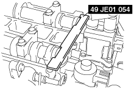
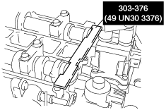
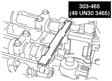
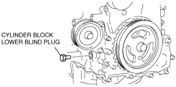

L8/LF/L3/L5 [Engine WM] ➭ ENGINE ➭ MECHANICAL ➭ TIMING CHAIN ASSEMBLY
id011000505600
1. Assemble in the order indicated in the table.
|
belbze00000177 |
|
1 |
Crankshaft sprocket |
|---|---|
|
2 |
Oil pump chain |
|
3 |
Oil pump sprocket (See Oil Pump Sprocket Assembly Note.) |
|
4 |
Oil pump chain guide (If equipped) |
|
5 |
Oil pump chain tensioner |
|
6 |
Seal (If equipped) |
|
7 |
Timing chain (See Timing Chain Assembly Note.) |
|
8 |
Chain guide |
|
9 |
Tensioner arm |
|
10 |
Chain tensioner |
|
11 |
Camshaft sprocket, variable valve timing actuator (With variable valve timing mechanism) (See Camshaft Sprocket, Variable Valve Timing Actuator (With variable valve timing mechanism) Assembly Note.) |
|
12 |
Front oil seal (See Front Oil Seal Assembly Note.) |
|
13 |
Engine front cover (See Engine Front Cover Assembly Note.) |
|
14 |
Drive belt idler pulley (If equipped) |
|
15 |
Water pump pulley |
|
16 |
Crankshaft pulley |
|
17 |
Crankshaft pulley lock bolt (See Crankshaft Pulley Lock Bolt Assembly Note.) |
|
18 |
Cylinder head cover (See Cylinder Head Cover Assembly Note) |
|
19 |
Spark plug |
|
20 |
Oil level gauge (If equipped) |
Oil Pump Sprocket Assembly Note
1. Temporarily install the crankshaft pulley and crankshaft pulley lock bolt to the crankshaft, and lock the oil pump against rotation as shown in figure.
|
belbze00000037 |
2. Install the oil pump sprocket, and then remove the crankshaft pulley and crankshaft pulley lock bolt.
Tightening torque
Silver bolt: 20—30 N·m {2.1—3.0 kgf·m, 15—22 ft·lbf}
Black bolt: 26—36 N·m {2.7—3.6 kgf·m, 20—26 ft·lbf}
1. Install the SST to the camshaft, then align the No. 1 camshaft position with the TDC.
Europe
|
 belbze00000134 |
Except Europe
|
 belbze00000135 |
|
 belbze00000172 |
2. Remove the cylinder block lower blind plug.
3. Install the SST as shown in the figure.
Cylinder block lower blind plug hole diameter: M8
|
belbze00000202 |
Cylinder block lower blind plug hole diameter: M10
|
belbze00000085 |
4. Turn the crankshaft clockwise so that the crankshaft is in the No.1 cylinder TDC position.
5. Install the timing chain.
6. Install the chain tensioner and remove the retaining wire.
|
belbze00000086 |
Camshaft Sprocket, Variable Valve Timing Actuator (With variable valve timing mechanism) Assembly Note
1. Hold the camshaft using a suitable wrench on the cast hexagon as shown in the figure.
2. Tighten the camshaft sprocket lock bolt.
|
belbze00000189 |
Tightening torque
|
Bolt type |
N·m {kgf·m, ft·lbf} |
|---|---|
|
Washer based bolt |
With variable valve timing mechanism : 69—75 {7.1—7.6, 50.9—55.3} Without variable valve timing mechanism : 89—95 {9.1—9.6, 65.7—70.0} |
|
Bolt and washer assembly |
69—75 {7.1—7.6, 50.9—55.3} |
|
Bolt with dent on head |
69—75 {7.1—7.6, 50.9—55.3} |
1. Apply clean engine oil to the oil seal.
2. Push the oil seal slightly in by hand.
3. Compress the oil seal using the SST and a hammer.
|
belbze00000088 |
|
belbze00000180 |
Engine Front Cover Assembly Note
1. Apply silicone sealant to the engine front cover as shown.
Caution• Install the engine front cover before the applied silicone sealant starts to harden.
• Completely remove any oil, dirt, sealant, or other foreign matter adhering to the engine front cover and engine front cover installation surface. If any oil, dirt, sealant, or other foreign matter is not removed from the space between the engine front cover and engine front cover installation surface, it may cause a sealing malfunction.
Without crescent grooves at joint sections of cylinder head and cylinder block
|
|
 belbze00000178
belbze00000178Thickness
A: 2.2—3.2 mm {0.087—0.12 in}
B: 1.5—2.5 mm {0.06—0.098 in}
With crescent grooves at joint sections of cylinder head and cylinder block (L8, LF)
|
belbze00000206 |
Thickness
A: 2.2—3.2 mm {0.087—0.12 in}
B: 1.5—2.5 mm {0.06—0.098 in}
C: 2.2—4.3 mm {0.09—0.16 in}
D: 3.3—4.3 mm {0.13—0.16 in}
With crescent grooves at joint sections of cylinder head and cylinder block (L3, L5)
|
belbze00000197 |
Thickness
A: 2.2—3.2 mm {0.087—0.12 in}
B: 1.5—2.5 mm {0.06—0.098 in}
C: 2.2—4.3 mm {0.09—0.16 in}
D: 3.3—4.3 mm {0.13—0.16 in}
2. Install the cylinder head cover bolts in the order as shown in the figure.
|
belbze00000091 |
|
No. |
Tightening torque N·m {kgf·m, ft·lbf} |
|---|---|
|
1—18 |
8.0—11.5 N·m {81.6—117.2 kgf·cm, 70.9—101.7 in·lbf} |
|
19—22 |
40—55 {4.1—5.6, 29.7—40.5} |
|
23 (If equipped) |
20—30 {2.1—3.0, 15—22} |
Crankshaft Pulley Lock Bolt Assembly Note
1. Install the SST to the camshaft as shown in the figure.
Europe
|
belbze00000134 |
Except Europe
|
belbze00000135 |
|
belbze00000172 |
2. Verify that No.1 cylinder is at TDC of the compression stroke. (Position counterweight contacts SST.)
3. To position the crankshaft pulley, temporarily tighten it and, using a suitable bolt (M6 X 1.0), fix the crankshaft pulley to the engine front cover.
|
|
 am6zzw00000829
am6zzw000008294. Install the SST to the ring gear to lock the crankshaft against rotation.
|
belbze00000179 |
5. Tighten the crankshaft pulley lock bolt in the order shown in the following two steps using the SST (49 D032 316).
Tightening procedure
1. 96—104 N·m {9.8—10.6 kgf·m, 70.9—76.7 ft·lbf}
2. 87°—93°
6. Remove the bolt (M6 X 1.0) installed to the crankshaft pulley.
7. Remove the SST from the camshaft.
8. Remove the SST from the cylinder block lower blind plug hole.
9. Remove the SST from the ring gear.
10. Rotate the crankshaft clockwise two turns and inspect the valve timing.
• If not aligned, loosen the crankshaft pulley lock bolt and repeat from Step 1.
11. Install the cylinder block lower blind plug.
|
 am6zzw00000929 |
Tightening torque
18—22 N·m {1.9—2.2 kgf·m, 13.3—16.2 ft·lbf}
Cylinder Head Cover Assembly Note
Caution• Install the cylinder head cover within 10 min of applying the silicone sealant.
1. Apply silicone sealant to the mating faces as shown in the figure.
|
belbze00000094 |
Thickness
4.0—6.0 mm {0.16—0.23 in}
2. Install the cylinder head cover with a new gasket.
3. Tighten the bolts in the order shown in the figure.
|
|
 belbze00000095
belbze00000095Tightening torque
8.0 —9.5 N·m {82—96 kgf·cm, 71—84 in·lbf}